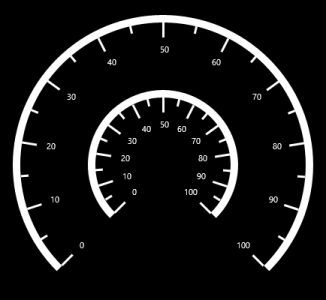

Scale
Scale contains three sub elements: Scale (Rim), Ticks, and Labels.
Main Scale
The MainScale contains a scale that integrates labels, tick marks, and a rim to customize the basic look and feel of the circular gauge. It defines the start angle, sweep direction and sweep angle, overall minimum and maximum values, and frequency of labels and tick marks. It can have multiple ranges. A range is a visual element that begins and ends at specified values within a scale. It can have one or more pointers to point out the values in the scale. It also has a GaugeHeader that is used to set a unique header for the Circular Gauge.
Code Example:
[XAML]
<syncfusion:SfCircularGauge x:Name="gauge" GaugeHeaderPosition="300,600" >
<syncfusion:SfCircularGauge.GaugeHeader>
<TextBlock Text="Temperature (K)"
Height="40" Width="150"
FontSize="20" Foreground="White"/>
</syncfusion:SfCircularGauge.GaugeHeader>
<syncfusion:SfCircularGauge.MainScale>
<syncfusion:CircularScale StartAngle="135"
SweepAngle="270"
StartValue="0"
EndValue="100"
Interval="10">
<syncfusion:CircularScale.Ranges>
<syncfusion:CircularRange StartValue="0"
EndValue="60" Stroke="#666666" />
<syncfusion:CircularRange StartValue="60"
EndValue="100" Stroke="#C1252C" />
</syncfusion:CircularScale.Ranges>
<syncfusion:CircularScale.Pointers>
<syncfusion:CircularPointer PointerType="NeedlePointer" Value="170"/>
</syncfusion:CircularScale.Pointers>
</syncfusion:CircularScale>
</syncfusion:SfCircularGauge.MainScale>
</syncfusion:SfCircularGauge>
[C#]
SfCircularGauge circularGauge = new SfCircularGauge();
circularGauge.GaugeHeaderPosition = new Point(300,600);
CircularScale _mainscale = new CircularScale();
_mainscale.StartAngle = 135;
_mainscale.SweepAngle = 270;
_mainscale.StartValue = 0;
_mainscale.EndValue = 100;
_mainscale.Interval = 10;
_mainscale.Ranges.Add(new CircularRange() { StartValue = 0, EndValue = 60, Stroke = new SolidColorBrush() });
_mainscale.Ranges.Add(new CircularRange() { StartValue = 0, EndValue = 60, Stroke = new SolidColorBrush() });
_mainscale.Pointers.Add(new CircularPointer() { PointerType = PointerType.NeedlePointer, Value = 170 });
circularGauge.MainScale = _mainscale;
TextBlock _textBlock = new TextBlock() { Text = "Temperature (K)", Height = 20, Width = 150, FontSize = 20, Foreground = new SolidColorBrush(Colors.White) };
circularGauge.GaugeHeader = _textBlock;
this.Grid.Children.Add(circularGauge);
Screenshot:
| { |
markdownify } |
Scale Radius Customization
By using the Radius property, the Scales radius can be set as required.
Code Example:
[XAML]
<syncfusion:SfCircularGauge x:Name="gauge">
<syncfusion:SfCircularGauge.Scales >
<syncfusion:CircularScale x:Name="CircularScale"
Radius="200"
Interval="10"
MinorTicksPerInterval="1"
TickLength="20"
TickStroke="White"
TickStrokeThickness="3"
SmallTickLength="10"
SmallTickStroke="White"
SmallTickStrokeThickness="3"
StartAngle="135"
SweepAngle="270"
StartValue="0"
EndValue="100">
</syncfusion:CircularScale>
<syncfusion:CircularScale x:Name="CircularScale1"
Radius="300"
Interval="10"
MinorTicksPerInterval="1"
TickLength="20"
TickStroke="White"
TickStrokeThickness="3"
SmallTickLength="10"
SmallTickStroke="White"
SmallTickStrokeThickness="3"
StartAngle="135"
SweepAngle="270"
StartValue="0"
EndValue="100">
</syncfusion:CircularScale>
</syncfusion:SfCircularGauge.Scales>
</syncfusion:SfCircularGauge>
[C#]
SfCircularGauge circularGauge = new SfCircularGauge();
CircularScale scale = new CircularScale();
scale.Radius = 200;
scale.Interval = 10;
scale.MinorTicksPerInterval = 1;
scale.TickLength = 20;
scale.TickStroke = new SolidColorBrush(Colors.White);
scale.TickStrokeThickness = 3;
scale.SmallTickLength = 10;
scale.StartValue = 0;
scale.EndValue = 100;
scale.SmallTickStroke = new SolidColorBrush(Colors.White);
scale.SmallTickStrokeThickness = 3;
CircularScale scale1 = new CircularScale();
scale1.Radius = 300;
scale.Interval = 10;
scale.MinorTicksPerInterval = 1;
scale.TickLength = 20;
scale.TickStroke = new SolidColorBrush(Colors.White);
scale.TickStrokeThickness = 3;
scale.SmallTickLength = 10;
scale.StartValue = 0;
scale.EndValue = 100;
scale.SmallTickStroke = new SolidColorBrush(Colors.White);
scale.SmallTickStrokeThickness = 3;
circularGauge.Scales.Add(scale);
circularGauge.Scales.Add(scale1);
this.Grid.Children.Add(circularGauge);
Screenshot:
| {  | markdownify } |
Multiple Scale
It helps to add multiple scales to the same circular gauge and also it helps to customize all the scales in the CircularGauge control.
Adding Multiple Scales in the Gauge
To add multiple scales in a Circular Gauge, the CircularScale collection has to be in the Scales.
Code Example:
[XAML]
<syncfusion:SfCircularGauge SpacingMargin="0.7">
<syncfusion:SfCircularGauge.Scales>
<syncfusion:CircularScale Height="500" Width="500">
<syncfusion:CircularScale.Ranges>
<syncfusion:CircularRange StartValue="0"
EndValue="60"
Stroke="#B0B0B0"
StrokeThickness="5" />
<syncfusion:CircularRange StartValue="60"
EndValue="100"
Stroke="#C1252C" StrokeThickness="5"/>
</syncfusion:CircularScale.Ranges>
<syncfusion:CircularScale.Pointers>
<syncfusion:CircularPointer Value="30"
PointerType="SymbolPointer"
Symbol="InvertedArrow"
SymbolPointerWidth="30"
SymbolPointerHeight="20"
SymbolPointerStroke="Green"/>
</syncfusion:CircularScale.Pointers>
</syncfusion:CircularScale>
<syncfusion:CircularScale Height="300" Width="300">
<syncfusion:CircularScale.Ranges>
<syncfusion:CircularRange StartValue="0"
EndValue="60"
Stroke="#B0B0B0"
StrokeThickness="5" />
<syncfusion:CircularRange StartValue="60"
EndValue="100"
Stroke="#C1252C" StrokeThickness="5"/>
</syncfusion:CircularScale.Ranges>
<syncfusion:CircularScale.Pointers>
<syncfusion:CircularPointer Value="30"
PointerType="NeedlePointer"/>
</syncfusion:CircularScale.Pointers>
</syncfusion:CircularScale>
</syncfusion:SfCircularGauge.Scales>
</syncfusion:SfCircularGauge>
[C#]
SfCircularGauge circularGauge = new SfCircularGauge();
CircularScale _mainscale = new CircularScale();
CircularScale scale1 = new CircularScale();
CircularScale scale2 = new CircularScale();
scale1.Height = 500;
scale1.Width = 500;
scale1.Ranges.Add(new CircularRange() { StartValue = 0, EndValue = 60, Stroke = new SolidColorBrush(Color.FromArgb(0xB0, 0xB0, 0xB0, 0xB0)), StrokeThickness = 5 });
scale1.Ranges.Add(new CircularRange() { StartValue = 60, EndValue = 100, Stroke = new SolidColorBrush(Color.FromArgb(0xFF,0xC1,0x25,0x2C)), StrokeThickness = 5 });
scale1.Pointers.Add(new CircularPointer() { Value = 30, PointerType = PointerType.SymbolPointer, Symbol = Symbol.InvertedArrow, SymbolPointerWidth = 30, SymbolPointerHeight = 20, SymbolPointerStroke = new SolidColorBrush(Colors.Green) });
scale2.Height = 300;
scale2.Width = 300;
scale2.Ranges.Add(new CircularRange() { StartValue = 0, EndValue = 60, Stroke = new SolidColorBrush((Color.FromArgb(0xB0, 0xB0, 0xB0, 0xB0))), StrokeThickness = 5 });
scale2.Ranges.Add(new CircularRange() { StartValue = 60, EndValue = 100, Stroke = new SolidColorBrush(Color.FromArgb(0xFF,0xC1,0x25,0x2C)), StrokeThickness = 5 });
scale2.Pointers.Add(new CircularPointer() { Value = 30, PointerType = PointerType.NeedlePointer });
circularGauge.Scales.Add(scale1);
circularGauge.Scales.Add(scale2);
this.Grid.Children.Add(circularGauge);
Screenshot:
{  |
markdownify } |
Screenshot:
{  |
markdownify } |